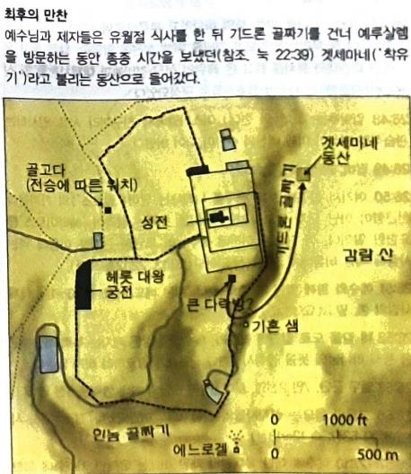

1예수께서 이 말씀을 다 마치시고 제자들에게 이르시되
2너희가 아는 바와 같이 이틀이 지나면 유월절이라 인자가 십자가에 못 박히기 위하여 팔리리라 하시더라
3그 때에 대제사장들과 백성의 장로들이 가야바라 하는 대제사장의 관정에 모여
안나스의 사위, 관정=사적 거처(관저)
4예수를 흉계로 잡아 죽이려고 의논하되
5말하기를 민란이 날까 하노니 명절에는 하지 말자 하더라
하지만 결국 명절에 체포
6예수께서 베다니 나병환자 시몬의 집에 계실 때에
7한 여자가 매우 귀한 향유 한 옥합을 가지고 나아와서 식사하시는 예수의 머리에 부으니
요12:1에서는 마르다, 나사로의 누이 마리아가 자신의 집에서 발에 바르는 걸로
8제자들이 보고 분개하여 이르되 무슨 의도로 이것을 허비하느냐
요12:4-유다가, 눅7:39-바리새파 사람이, 막14:4-어떤 사람이
9이것을 비싼 값에 팔아 가난한 자들에게 줄 수 있었겠도다 하거늘
300 데나리온 이상(1년 치 노동자 임금)=막14:5, 요12:5
10예수께서 아시고 그들에게 이르시되 너희가 어찌하여 이 여자를 괴롭게 하느냐 그가 내게 좋은 일을 하였느니라
11가난한 자들은 항상 너희와 함께 있거니와 나는 항상 함께 있지 아니하리라
12이 여자가 내 몸에 이 향유를 부은 것은 내 장례를 위하여 함이니라
13내가 진실로 너희에게 이르노니 온 천하에 어디서든지 이 복음이 전파되는 곳에서는 이 여자가 행한 일도 말하여 그를 기억하리라 하시니라
14그 때에 열둘 중의 하나인 가룟 유다라 하는 자가 대제사장들에게 가서 말하되
15내가 예수를 너희에게 넘겨 주리니 얼마나 주려느냐 하니 그들이 은 삼십을 달아 주거늘
4개월 치 노동자 임금(30세겔, 750만원)
16그가 그 때부터 예수를 넘겨 줄 기회를 찾더라
17무교절의 첫날에 제자들이 예수께 나아와서 이르되 유월절 음식 잡수실 것을 우리가 어디서 준비하기를 원하시나이까
목요일 오후(금요일 오후 십자가에 못 박혀 돌아가심)
18이르시되 성안 아무에게 가서 이르되 선생님 말씀이 내 때가 가까이 왔으니 내 제자들과 함께 유월절을 네 집에서 지키겠다 하시더라 하라 하시니
19제자들이 예수께서 시키신 대로 하여 유월절을 준비하였더라
20저물 때에 예수께서 열두 제자와 함께 앉으셨더니
21그들이 먹을 때에 이르시되 내가 진실로 너희에게 이르노니 너희 중의 한 사람이 나를 팔리라 하시니
22그들이 몹시 근심하여 각각 여짜오되 주여 나는 아니지요
23대답하여 이르시되 나와 함께 그릇에 손을 넣는 그가 나를 팔리라
그릇=소스(샤로셋)가 담긴 접시
24인자는 자기에 대하여 기록된 대로 가거니와 인자를 파는 그 사람에게는 화가 있으리로다 그 사람은 차라리 태어나지 아니하였더라면 제게 좋을 뻔하였느니라
25예수를 파는 유다가 대답하여 이르되 랍비여 나는 아니지요 대답하시되 네가 말하였도다 하시니라
긍정의 답변
26그들이 먹을 때에 예수께서 떡을 가지사 축복하시고 떼어 제자들에게 주시며 이르시되 받아서 먹으라 이것은 내 몸이니라 하시고
27또 잔을 가지사 감사 기도 하시고 그들에게 주시며 이르시되 너희가 다 이것을 마시라
28이것은 죄 사함을 얻게 하려고 많은 사람을 위하여 흘리는 바 나의 피 곧 언약의 피니라
29그러나 너희에게 이르노니 내가 포도나무에서 난 것을 이제부터 내 아버지의 나라에서 새것으로 너희와 함께 마시는 날까지 마시지 아니하리라 하시니라
30이에 그들이 찬미하고 감람 산으로 나아가니라
31그 때에 예수께서 제자들에게 이르시되 오늘 밤에 너희가 다 나를 버리리라 기록된 바 내가 목자를 치리니 양의 떼가 흩어지리라 하였느니라
오늘 밤=유월절 밤
32그러나 내가 살아난 후에 너희보다 먼저 갈릴리로 가리라
33베드로가 대답하여 이르되 모두 주를 버릴지라도 나는 결코 버리지 않겠나이다
34예수께서 이르시되 내가 진실로 네게 이르노니 오늘 밤 닭 울기 전에 네가 세 번 나를 부인하리라
35베드로가 이르되 내가 주와 함께 죽을지언정 주를 부인하지 않겠나이다 하고 모든 제자도 그와 같이 말하니라
36이에 예수께서 제자들과 함께 겟세마네라 하는 곳에 이르러 제자들에게 이르시되 내가 저기 가서 기도할 동안에 너희는 여기 앉아 있으라 하시고
겟세마네=기름(올리브) 짜는 틀(착유기)
37베드로와 세베대의 두 아들을 데리고 가실새 고민하고 슬퍼하사
38이에 말씀하시되 내 마음이 매우 고민하여 죽게 되었으니 너희는 여기 머물러 나와 함께 깨어 있으라 하시고
39조금 나아가사 얼굴을 땅에 대시고 엎드려 기도하여 이르시되 내 아버지여 만일 할 만하시거든 이 잔을 내게서 지나가게 하옵소서 그러나 나의 원대로 마시옵고 아버지의 원대로 하옵소서 하시고
40제자들에게 오사 그 자는 것을 보시고 베드로에게 말씀하시되 너희가 나와 함께 한 시간도 이렇게 깨어 있을 수 없더냐
41시험에 들지 않게 깨어 기도하라 마음에는 원이로되 육신이 약하도다 하시고
42다시 두 번째 나아가 기도하여 이르시되 내 아버지여 만일 내가 마시지 않고는 이 잔이 내게서 지나갈 수 없거든 아버지의 원대로 되기를 원하나이다 하시고
43다시 오사 보신즉 그들이 자니 이는 그들의 눈이 피곤함일러라
44또 그들을 두시고 나아가 세 번째 같은 말씀으로 기도하신 후
45이에 제자들에게 오사 이르시되 이제는 자고 쉬라 보라 때가 가까이 왔으니 인자가 죄인의 손에 팔리느니라
(추정)자고 쉬라=아직도 자고 있느냐?, 아직도 자고 있구나!
46일어나라 함께 가자 보라 나를 파는 자가 가까이 왔느니라
47말씀하실 때에 열둘 중의 하나인 유다가 왔는데 대제사장들과 백성의 장로들에게서 파송된 큰 무리가 칼과 몽치를 가지고 그와 함께 하였더라
48예수를 파는 자가 그들에게 군호를 짜 이르되 내가 입맞추는 자가 그이니 그를 잡으라 한지라
49곧 예수께 나아와 랍비여 안녕하시옵니까 하고 입을 맞추니
50예수께서 이르시되 친구여 네가 무엇을 하려고 왔는지 행하라 하신대 이에 그들이 나아와 예수께 손을 대어 잡는지라
필로스(친근함)가 아닌 헤타이로스(단지 알고 지내는) 사용
51예수와 함께 있던 자 중의 하나가 손을 펴 칼을 빼어 대제사장의 종을 쳐 그 귀를 떨어뜨리니
52이에 예수께서 이르시되 네 칼을 도로 칼집에 꽂으라 칼을 가지는 자는 다 칼로 망하느니라
53너는 내가 내 아버지께 구하여 지금 열두 군단 더 되는 천사를 보내시게 할 수 없는 줄로 아느냐
54내가 만일 그렇게 하면 이런 일이 있으리라 한 성경이 어떻게 이루어지겠느냐 하시더라
55그 때에 예수께서 무리에게 말씀하시되 너희가 강도를 잡는 것 같이 칼과 몽치를 가지고 나를 잡으러 나왔느냐 내가 날마다 성전에 앉아 가르쳤으되 너희가 나를 잡지 아니하였도다
56그러나 이렇게 된 것은 다 선지자들의 글을 이루려 함이니라 하시더라 이에 제자들이 다 예수를 버리고 도망하니라
57예수를 잡은 자들이 그를 끌고 대제사장 가야바에게로 가니 거기 서기관과 장로들이 모여 있더라
산헤드린 구성원들
58베드로가 멀찍이 예수를 따라 대제사장의 집 뜰에까지 가서 그 결말을 보려고 안에 들어가 하인들과 함께 앉아 있더라
59대제사장들과 온 공회가 예수를 죽이려고 그를 칠 거짓 증거를 찾으매
60거짓 증인이 많이 왔으나 얻지 못하더니 후에 두 사람이 와서
61이르되 이 사람의 말이 내가 하나님의 성전을 헐고 사흘 동안에 지을 수 있다 하더라 하니
부활, 성전=예수님
62대제사장이 일어서서 예수께 묻되 아무 대답도 없느냐 이 사람들이 너를 치는 증거가 어떠하냐 하되
63예수께서 침묵하시거늘 대제사장이 이르되 내가 너로 살아 계신 하나님께 맹세하게 하노니 네가 하나님의 아들 그리스도인지 우리에게 말하라
사53:7 그가 곤욕을 당하여 괴로울 때에도 그의 입을 열지 아니하였음이여 마치 도수장으로 끌려 가는 어린 양과 털 깎는 자 앞에서 잠잠한 양 같이 그의 입을 열지 아니하였도다
64예수께서 이르시되 네가 말하였느니라 그러나 내가 너희에게 이르노니 이 후에 인자가 권능의 우편에 앉아 있는 것과 하늘 구름을 타고 오는 것을 너희가 보리라 하시니
하늘 구름을 타고 오는 것=재림
65이에 대제사장이 자기 옷을 찢으며 이르되 그가 신성모독 하는 말을 하였으니 어찌 더 증인을 요구하리요 보라 너희가 지금 이 신성모독 하는 말을 들었도다
66너희 생각은 어떠하냐 대답하여 이르되 그는 사형에 해당하니라 하고
67이에 예수의 얼굴에 침 뱉으며 주먹으로 치고 어떤 사람은 손바닥으로 때리며
68이르되 그리스도야 우리에게 선지자 노릇을 하라 너를 친 자가 누구냐 하더라
69베드로가 바깥 뜰에 앉았더니 한 여종이 나아와 이르되 너도 갈릴리 사람 예수와 함께 있었도다 하거늘
70베드로가 모든 사람 앞에서 부인하여 이르되 나는 네가 무슨 말을 하는지 알지 못하겠노라 하며
71앞문까지 나아가니 다른 여종이 그를 보고 거기 있는 사람들에게 말하되 이 사람은 나사렛 예수와 함께 있었도다 하매
72베드로가 맹세하고 또 부인하여 이르되 나는 그 사람을 알지 못하노라 하더라
73조금 후에 곁에 섰던 사람들이 나아와 베드로에게 이르되 너도 진실로 그 도당이라 네 말소리가 너를 표명한다 하거늘
갈릴리 사람(유다를 제외한 제자들은 모두 갈릴리 출신)
74그가 저주하며 맹세하여 이르되 나는 그 사람을 알지 못하노라 하니 곧 닭이 울더라
75이에 베드로가 예수의 말씀에 닭 울기 전에 네가 세 번 나를 부인하리라 하심이 생각나서 밖에 나가서 심히 통곡하니라
